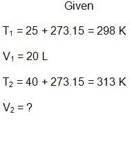
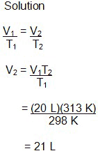
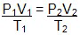
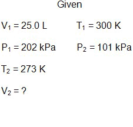
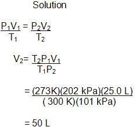
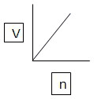
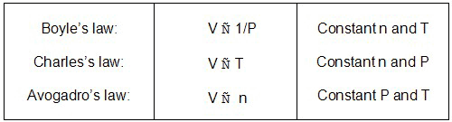
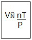
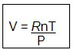
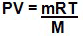

Unit 5: Gases and Atmospheric Chemistry
Activity 2: Relationships
Content
When pressure and the mass of the gas are fixed, the equation can be used to calculate a new temperature or volume if there are changes to the temperature and volume.
 Example
Example
If 20 L of oxygen gas is heated from 25 °C to 40 °C , at constant pressure, find the final volume of the gas.
 Sample Solution
Sample Solution
 |
 |
 Check Your Understanding
Check Your Understanding
- At a constant pressure, 20 L of a gas at 400 K are expanded to 30 L. Find the final temperature.
 Answer
Answer
Combined Gas Laws
Pressure, temperature and volume can be merged to produce the combined gas law. It is represented as follows:

Example
Solution
|  |  |
Check Your Understanding
- A 300 mL sample of an ideal gas at 27 °C and 100 kPa pressure is subjected to changes in pressure and temperature. The pressure is doubled and the temperature changed to 400 K. Calculate the new volume.
Answer
Avogadro’s Law

|
StopBefore you go further with the upcoming interactive model, you should pay attention to the following:
|
|---|

|
Watch and participate in the interactive model, GasLab. Please be aware, that, depending on your Internet connection speed, all clips on this page may take a few minutes to download. You can always continue reading the remainder of this page while you wait. |
|---|
There is a direct relationship between volume and the change in mass of an ideal gas. This relationship is expressed as V n. Keeping pressure and temperature constant, a change in mass directly affects the change in volume.
Graphically, the relationship is as follows:

Ideal Gas Law
Up to this point in Activity 2, we have explored the relationships involving moles, volume, pressure and temperature of an ideal gas. The proportional relationships are as follows:

Real gases are different from ideal gases. It is important to note that these relationships describe ideal gases. We assume that there are no forces of attraction between molecules of gas in a real world. However, any deviation from these relationships for ideal gases occurs at high pressures, which force the gaseous molecules closer together. Gases will deviate from the ideal behaviour at low temperatures when the gas is close to changing into the liquid state. The combination of all three laws, using the proportionality sign, produces the following expression:

Again, to change the proportionality sign into an equals sign, a constant needs to be introduced into the expression. It now looks like the following:

A more familiar version of this formula is:
If the mass of the gas is given, then the n can be substituted using the mass of the gas and its molecular molar mass. Here is another version:

The R is called the gas constant and its value is based on standard temperature and pressure (STP). To keep consistency in the scientific community regarding calculations with the ideal gas law, it has been decided that physical data, concerning gases, correlates with an agreed upon value of standard temperature and pressure. Standard temperature is O°C (273 K) and standard pressure is101.3 kPa. The numerical value of R varies with the units of the other variables. Here is a list of the different values:

* SI unit
This is a disclaimer. External Resources will open in a new window. Not responsible for external content.
Unless otherwise indicated, all images in this Activity are from the public domain or are © clipart.com or Microsoft clipart and are used with permission.